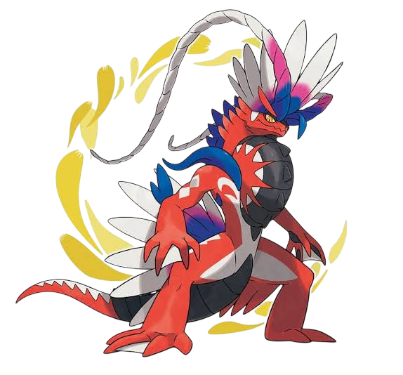
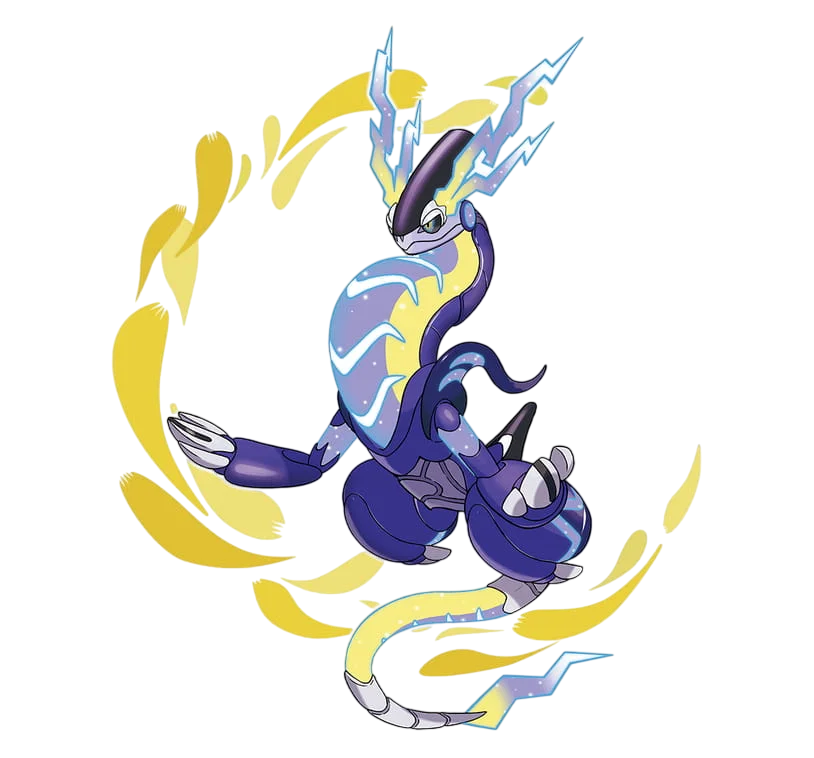

Trang chủ


Koraidon là Pokémon huyền thoại đại diện cho phiên bản Pokémon Scarlet, được biết đến là dạng cổ xưa của loài Cyclizar sống từ hàng triệu năm trước. Mang hai hệ Fighting và Dragon, Koraidon sở hữu vẻ ngoài hoang dã, oai vệ của một loài bò sát cổ đại kết hợp với những chiếc lông vũ sặc sỡ và chiếc mào lớn đầy kiêu hãnh. Khi bước vào trận chiến, đặc tính Orichalcum Pulse của nó sẽ kích hoạt thời tiết nắng gắt, đồng thời cường hóa sức mạnh thể chất để tung ra chiêu thức đặc trưng Collision Course đầy uy lực. Dù phần ngực và đuôi cuộn tròn trông rất giống bánh xe, Koraidon thực chất lại dùng bốn chân để chạy và dùng màng cánh để lướt đi trong gió. Nó là hiện thân của sức mạnh cơ bắp thô sơ, sự gắn kết chặt chẽ với thiên nhiên và các giá trị truyền thống của vùng đất Paldea.Trái ngược hoàn toàn, Miraidon là vị thần bảo hộ đại diện cho Pokémon Violet, mang hình dáng đến từ tương lai xa xôi của Cyclizar với hai hệ Electric và Dragon. Thiết kế của Miraidon mang đậm hơi hướng công nghệ viễn tưởng với cơ thể làm bằng kim loại mượt mà, đôi mắt LED điện tử sinh động và những luồng năng lượng xanh neon rực rỡ. Trong chiến đấu, đặc tính Hadron Engine giúp nó thiết lập môi trường Điện trường ngay lập tức, gia tăng tối đa chỉ số Tấn công Đặc biệt để tối ưu hóa chiêu thức sấm sét Electro Drift. Khác với người anh em thời cổ đại, các bộ phận của Miraidon có thể biến đổi thành bánh xe năng lượng và động cơ phản lực thực sự, giúp nó lướt đi vô cùng mượt mà trên mọi địa hình. Miraidon chính là biểu tượng của sự tân tiến, đỉnh cao công nghệ và kỷ nguyên hiện đại hóa.